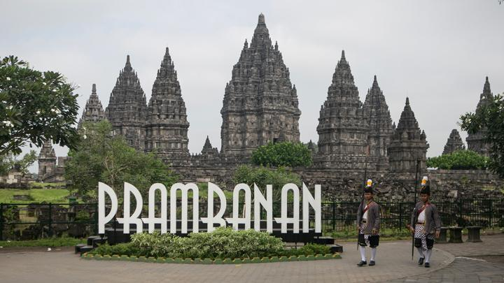
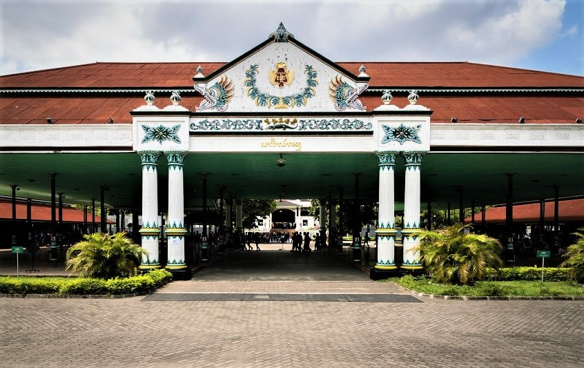

| Pertanyaan |
Jawaban |
| 1. Apa yang membuat arsitektur
Prambanan begitu istimewa dan unik? |
Bentuk dari tiga candi utama relatif
lebih tinggi (Siwa, Bahma, Wisnu). Candi Prambanan juga menggunakan konsep Trimurti dengan
pusatnya adalah Candi Siwa.
|
| 2. Bagaimanakah perbandingan antara
arsitektur Candi Prambanan dengan arsitektur Candi Borobudur?
| Candi Prambanan menggunakan konsep
Trimurti dengan pusatnya Candi Siwa. Sedangkan, Candi Borobudur menggunakan konsep piramida
bertingkat dengan tiga zona yang berbeda.
|
| 3. Bagaimana warisan arsitektur candi
Prambanan memengaruhi bangunan-bangunan lain di Indonesia?
| Candi Prambanan dapat mengaruhi bangunan-bangunan
lain di Indonesia dengan cara menjadi inspirasi atau patokan untuk desain bangunan-bangunan
di Indonesia, seperti Pura Besakih yang memiliki konsep bertingkat seperti Prambanan, Masjid Menara, dll.
Dalam unsur cerita, kisah Ramayana di Candi Prambanan juga memengaruhi seni ukiran dan patung pada
bangunan tradisional, termasuk rumah adat Jawa dan Keraton Yogyakarta.
|
| 4. Bagaimana peran budaya dan agama dalam
pembangunan Candi Prambanan?
| Candi Prambanan sendiri dibangun untuk digunakan
sebagai tempat ibadah bagi masyarakat yang menganut agama Hindu. Candi Prambanan juga mempunyai
simbol-simbol berbudaya seperti ukiran dan patung-patung yang bersifat tradisional khas Indonesia.
|
| 5. Bagaimana kerajaan Yogyakarta memainkan
peran dalam pembentukan nasionalisme Indonesia?
| Kerajaan Yogyakarta memainkan peran dalam pembentukan nasionalisme
Indonesia karena beberapa sultan atau yang dikenal pemimpin kerajaan kota DIY sudah berjuang saat masa
penjajahan Indonesia oleh berbagai negara. Contoh dari pahlawan-pahlawan yang merupakan seorang sultan
Yogyakarta adalah Sultan Hamengkubuwono IX.
|
| 6. Bagaimana keraton tersebut mempertahankan
tradisi dan nilai-nilai budaya Indonesia?
| Keraton Yogyakarta mempertahankan tradisi dan nilai-nilai budaya Indonesia
dengan cara sering melakukan tradisi yang bersifat khas Indonesia, seperti adat-adat atau ritual yang diadakan secara rutin
oleh orang-orang dalam Keraton atau pekerja-pekerja kepercayaan Sultan Yogyakarta. Salah satu cara yang lain adalah dengan
mempertahankan sistem pemerintahan kerajaan/monarki, sehingga nilai-nilai budaya Indonesia masih bertahan.
|

